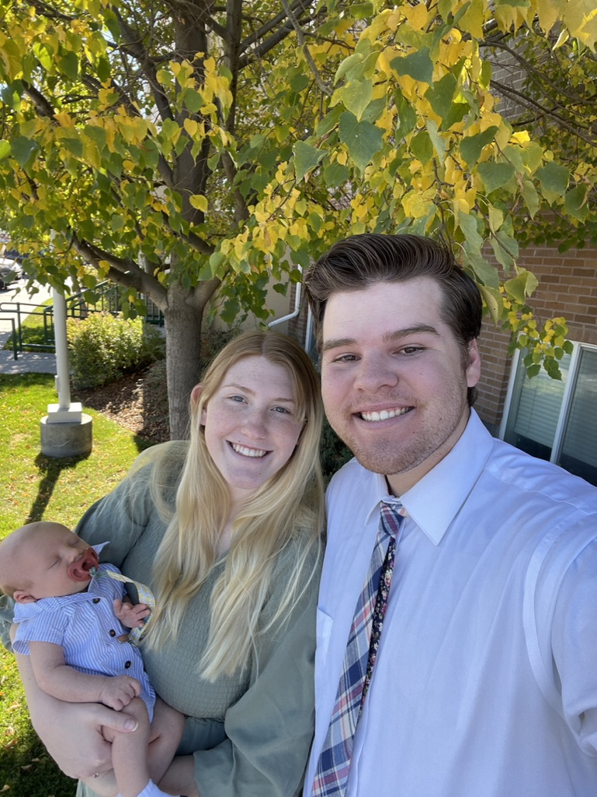

About Me
Hi, I'm Dexter Davenport, a 21-year-old software engineering student and family man. I graduated from American Leadership Academy in 2019 and started my higher education journey at Chandler-Gilbert Community College before transferring to Brigham Young University-Idaho. I'm on track to graduate in April 2023 with a Bachelor's degree in Software Engineering, which I'm very excited about.
Aside from my academic pursuits, I'm also an Eagle Scout, having achieved this milestone at the young age of 13. I've always been passionate about learning new things and challenging myself, which is why I enjoy activities like mountain biking and playing musical instruments. However, my greatest source of joy comes from spending time with my wife and son. They inspire me to work hard and be the best version of myself.
I'm eager to apply my skills and knowledge to real-world challenges and make a positive impact on the world. As you explore my portfolio, I hope you'll get a sense of my dedication, creativity, and passion for software engineering. Thank you for taking the time to get to know me.¸
Education
-
Bachelor of Science in Software Engineering with a Minor in Computer Information Technology
Brigham Young University-Idaho, expected graduation: April 2023
-
Certificate in Quality Assurance
Received: April 2023
-
Certificate in Computer Programming
Received: April 2023
Projects
-
dexterdavenport.com - HTML, CSS, JavaScript (Always In Progress)
This website serves as my portfolio, where you can discover information about me, including my education, current projects, and work experience. Notably, this website has been entirely coded from scratch.
-
Calendar App - Flutter (In Progress)
This is a cross-platform application that enables users to create events that can be accessed from any device. Additionally, each event comes with an associated text file that allows users to take notes for the event.
-
Wordle Solver - Python (Complete)
This Python script is designed to help users solve the New York Times game Wordle by using a comprehensive list of five-letter words and the provided information to progressively refine the list until the correct word is found.
Work History
-
Junior Software Engineering Intern
Somewhat Simple, January 2023 - Present
- Developed a web application using React and Node.js
- Contributed to the development of an API using Flask
- Collaborated with a team of software engineers to identify and fix bugs in the codebase
-
Dialer
Venture Data, October 2020 - December 2021
- Provided technical support to employees across multiple departments
- Managed and maintained company hardware and software inventory
- Assisted with the deployment of new software and hardware solutions
-
Pool Cleaner
Coconut Pools, October 2019 - June 2020
- Developed a web application using React and Node.js
- Contributed to the development of an API using Flask
- Collaborated with a team of software engineers to identify and fix bugs in the codebase
-
Home Inspectors Assistant
National Property Inspections, March 2019 - August 2019
- Developed a web application using React and Node.js
- Contributed to the development of an API using Flask
- Collaborated with a team of software engineers to identify and fix bugs in the codebase
-
Floor Worker
Walmart, October 2018 - March 2019
- Developed a web application using React and Node.js
- Contributed to the development of an API using Flask
- Collaborated with a team of software engineers to identify and fix bugs in the codebase
-
Front of House Worker
Chick-fil-A, October 2016 - December 2016
- Developed a web application using React and Node.js
- Contributed to the development of an API using Flask
- Collaborated with a team of software engineers to identify and fix bugs in the codebase
Contact Me
Email: dexterldavenport@gmail.com
Phone Number: (480) 561-8469